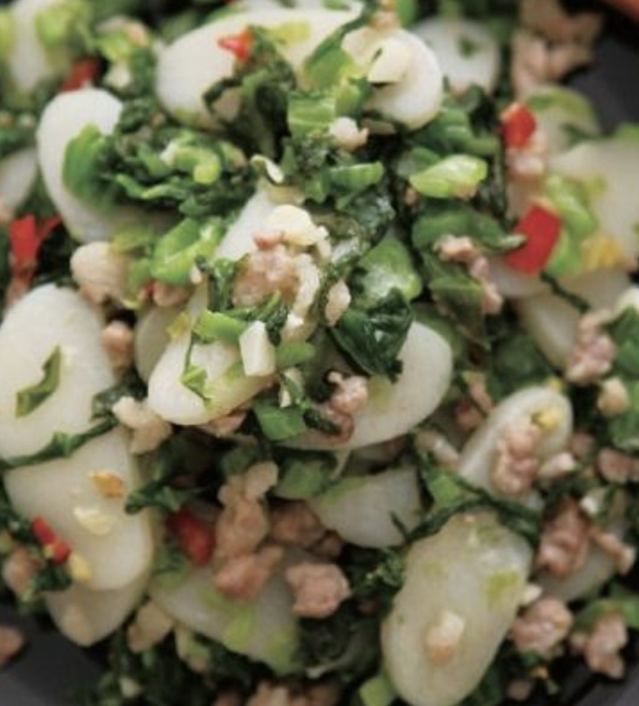

#25 - STIR-FRIED RICE STICK WITH PRESERVED VEGETABLE AND PORK - 雪菜肉絲炒年糕
I serve often this dish for my Shanghainese dinner parties and everyone loves it. Even after many courses with maybe eight cold appetizers and four hot dishes, the guests usually manage to finish this dish.

INGREDIENTS:
- 1 pack (500g) Fresh pre-sliced rice sticks (Korean/shanghai style)
- 1 cup Pre-cooked preserved vegetable and pork (see separate recipe)
- 2 slices ginger
- 2 TBSP vegetable oil for frying
- 1 tsp sesame oil
Directions:
- Opened the rice sticks package and break loose each pieces.
- Heat a wok or a large frying pan until it is hot.
- Add 2 TBSP vegetable oil into the wok.
- When the oil is hot, add the ginger and cook until fragrant.
- Remove the ginger from oil and discard.
- Put the rice sticks into the oil and stir-fry for a few minutes.
- Add 1-cup water, cover, and turn the fire to medium.
- Let it cook for about 5 min.
- Test the rice sticks. It should be soft and slightly chewy, but not hard.
- Add in the pre-cooked vegetable and pork.
- Mix well and let the excessive sauce evaporate.
- Add a few drops of sesame oil and serve.
(Serves 1 person)
Note:
- Please refer to recipe: Preserved Vegetable With Pork.